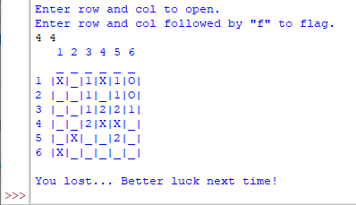
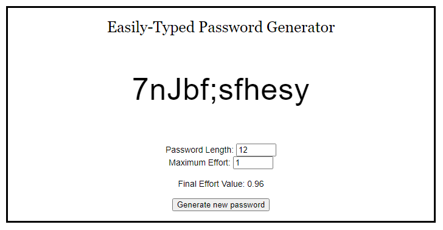
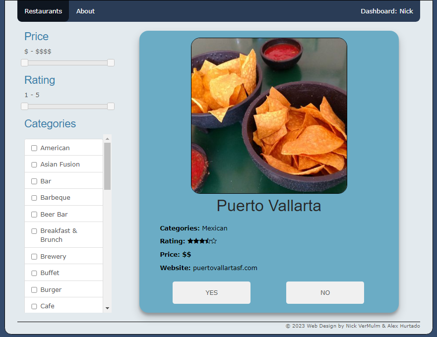
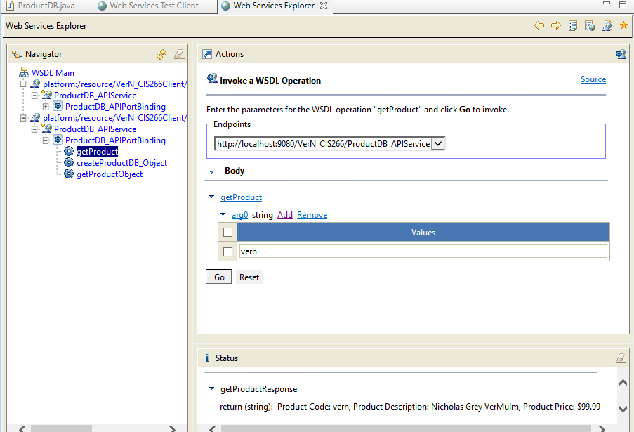

Select a project to view its details:
-
Python Minesweeper

A simple, one-file ASCII-style minesweeper clone designed to work in IDLE. Users have full functionality, can control the size of the game board, and mines are randomly generated based on a difficulty constant that's easily edited.
You can view or download the code HERE.
-
Javascript Password Generator

This is a web app designed to practice my javascript. Its purpose is to generate a password that is not only secure, but easy to type as well. Passwords are randomly generated at the length you select until they match an ease of type you select. The effort model used was reverse engineered from CarpalX, a system designed to test the optimization of keyboard layouts.
You can view and test the webpage HERE.
-
PHP Restaurant Web App

A multipurpose web application built using PHP. This app is designed to show the user a random restaurant in their area for them to save and then connect to another user to find matches. Hopefully this fixes the problem of my wife and I being unable to decide on where to eat. Users are generated and matched dynamically, however the database is static; given that this is a proof-of-concept.
You can view or download the code HERE.
-
Web Service Applications

These are a few different small web applications built to test different web services. You'll find links to a few different versions below. Built throughout the semester, these were designed to test our knowledge of API connections and dynamic development.